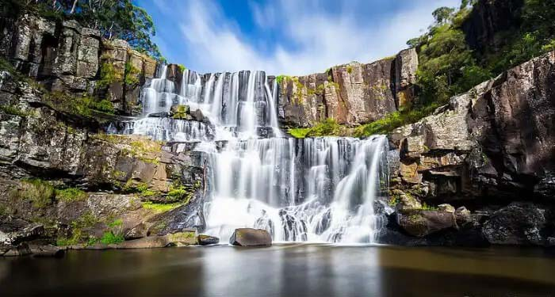

Welcome To Beautiful Waterfalls Of The World
On this website we focus on the beauty and calming effect of falling, flowing water, better known as waterfalls! Join us for this short site seeing introduction to some of the most beautiful waterfalls of the world. Take a moment to enjoy some of nature's abundant wonders inherent on our planet. Feel the peace and serenity as you take in the power of the world around you. Breath in deeply and relax, letting the waterfalls take you away. This is our world, Let's appreciate it together!!!
 Kintampo Fig.2Many of the worlds water falls are accessible by foot paths. Some are obvious, such as national park trails, while some are hidden off the beaten path. Not all waterfalls are Niagara Falls' level events. Some waterfalls are small. To be considered a waterfall, it must be at least 5 feet high. Most will concede, no matter the height, flowing water in nature is one of the most breath taking scenes youn can experience.